I wonder how much public money is buried in the ground in Moldova. Not literal cash, but money that the Soviet-era government would have paid for materials and labour to build huge underground structures during the Cold War.
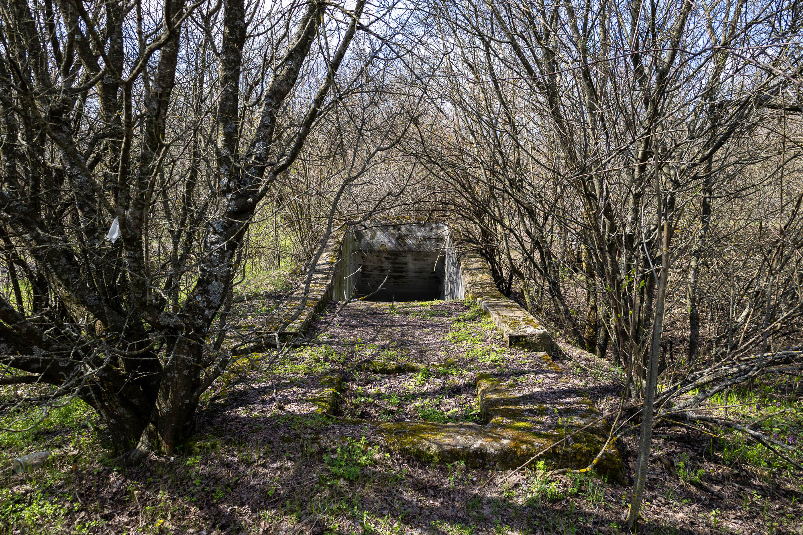
Installations like the two bunkers I explored at this location remain obscured and forgotten within the forest since their abandonment during the Soviet withdrawal in 1991. At the same time, they are also totally accessible and open to visitors who know their location.
This bunker complex was once a tactical signal hub within a larger military network that would have been used in the event of war with NATO. The Soviet 14th Army, headquartered in the nearby Tiraspol, would have used bunkers like this to communicate across the Balkans.
Access to the bunkers was easy: walk up the concrete block road until you pass a local who is asleep on the ground outside his nearby home, continue straight, then turn left, and the first entrance welcomes you underground.
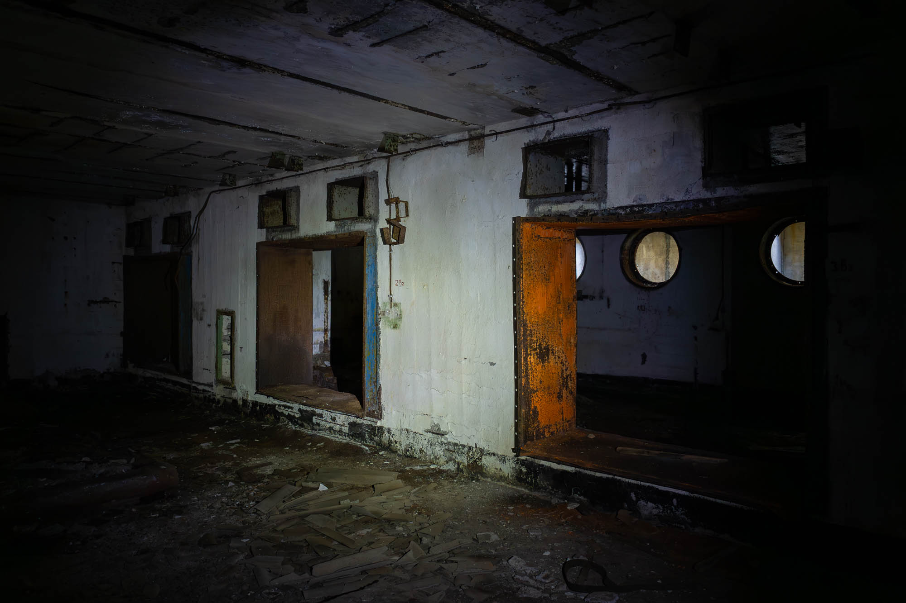
The first of the two bunkers I entered was the power station bunker. Found between a group of trees, its single staircase recedes into the ground. At the end of the staircase, past bunker doors, you’ll find two large rooms each with 8 circular holes in opposite walls. These holes were once intake and exhaust holes for large diesel generators which powered the whole complex.
Not much is left today; scrappers have already taken all the metal that was once worth something, leaving these rooms empty. But what remains is nice dramatic lighting and decaying contrasting paint.
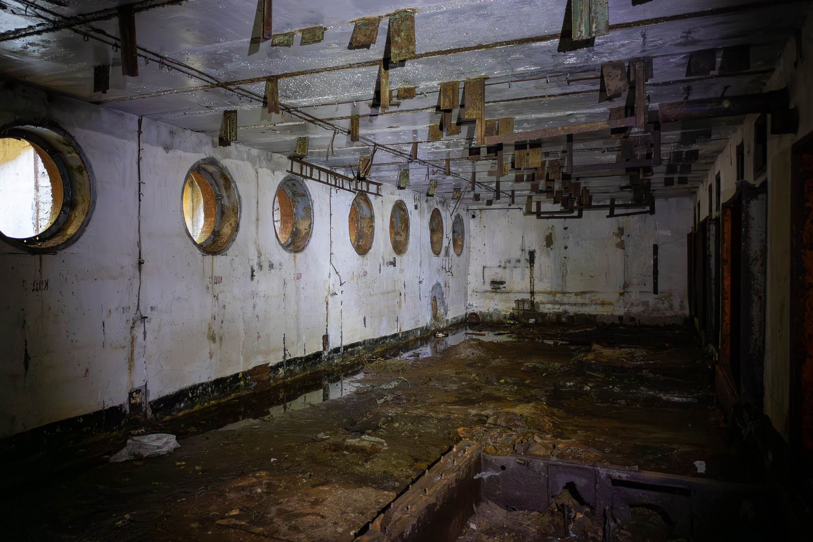
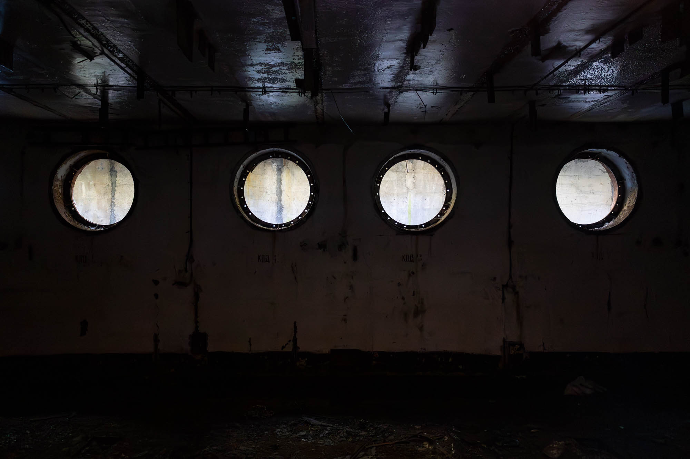
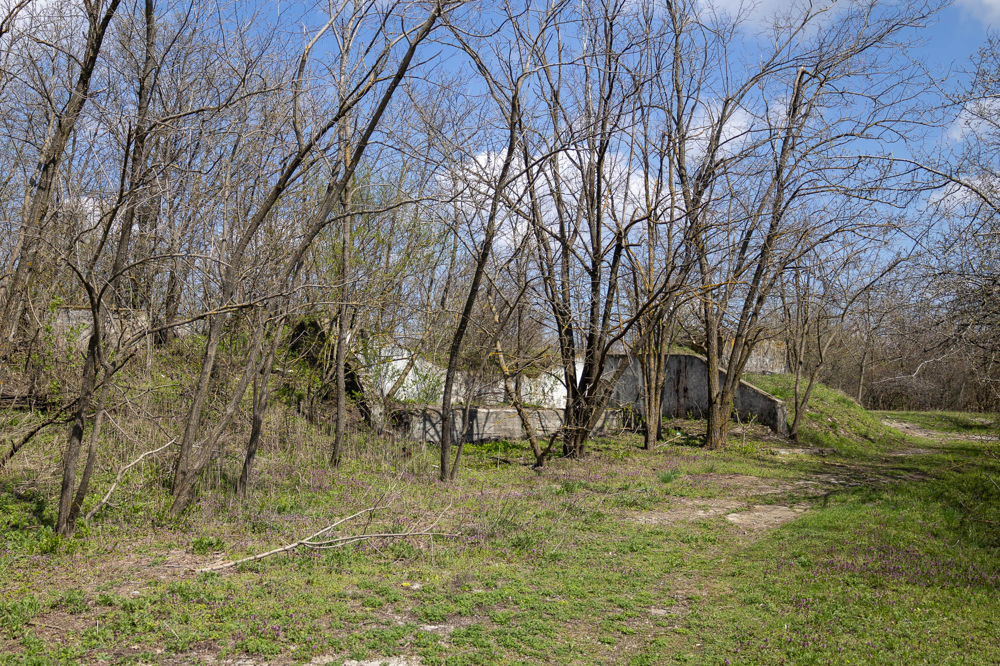
The second of the two bunkers is a much larger three-level bunker that would have housed all the radio communication equipment and telephone switchboards. Again, a staircase recedes into the ground for entrance.
Bunkers like this one would have hosted many soldiers, engineers, and support staff – making up a sizeable increase to any rural area where a bunker was located. For the village near this bunker, it is said that the local population was particularly unfriendly to the Russian soldiers.
The same cannot be said about other nearby villages which were more Russified.
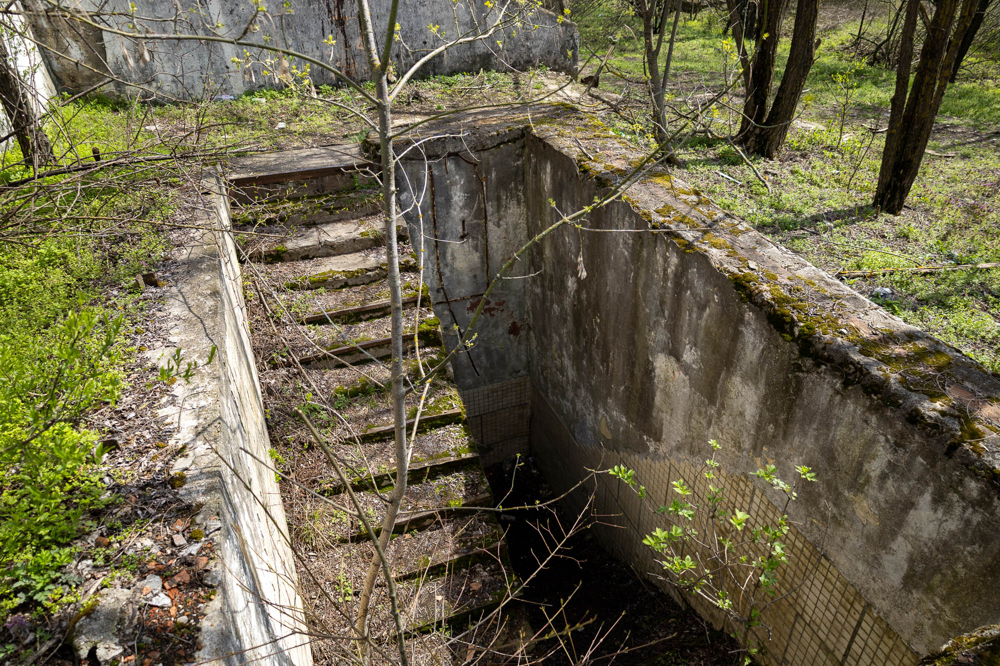
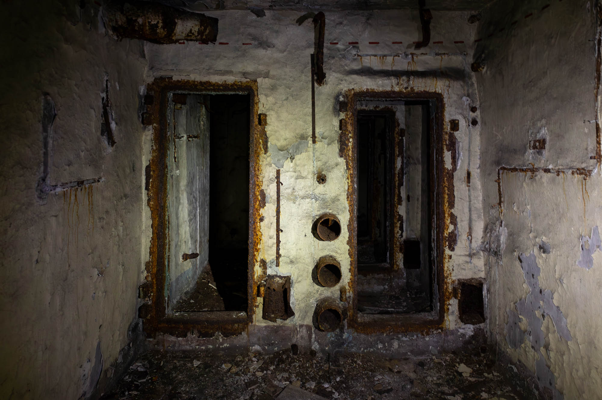
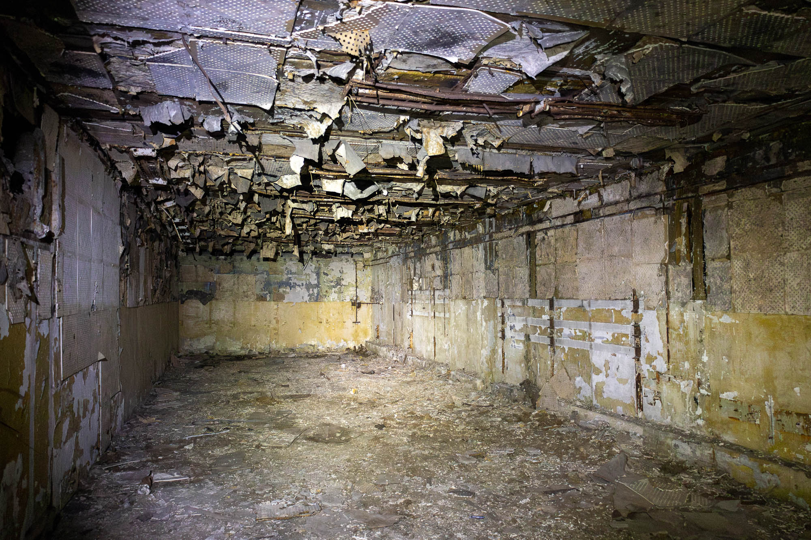
After passing through rusted bulkheads with missing doors and visiting countless decaying rooms, stairs take you further down into the depths of the bunker.
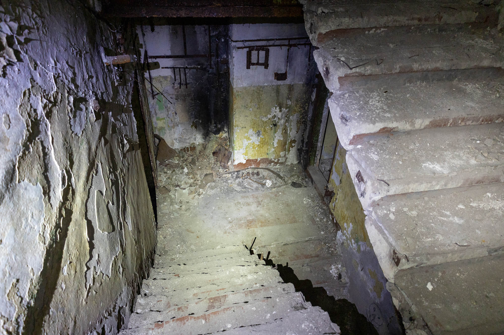
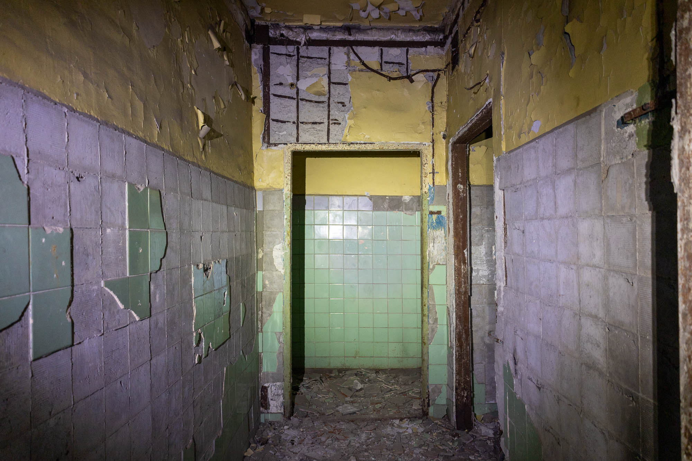
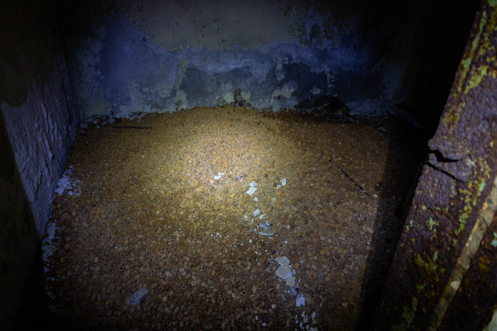
One of the rooms I found was full of the small ceramic tubes, known as Raschig rings.
In the event of a nuclear or chemical attack, the bunker's exterior air supply would be shut down. To create fresh oxygen for the inhabitants, an alkaline liquid would flow over the exterior of these rings while the bunker's used air was blown through the center. The CO2 in the air would react with the alkaline on the surface of the rings and be “scrubbed” out, allowing the refreshed air to be recirculated.
How do these end up in one large pile? Metal scrappers probably dumped them here while they took everything else of value.
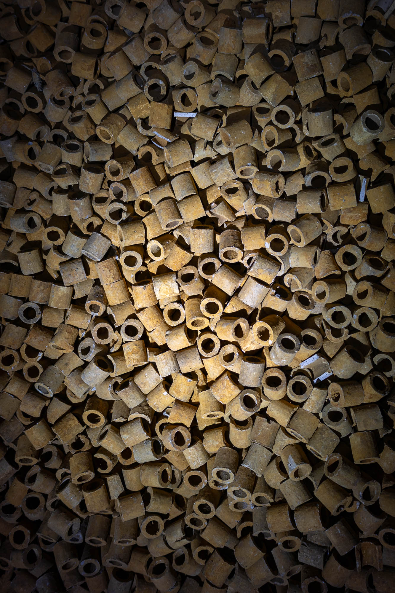
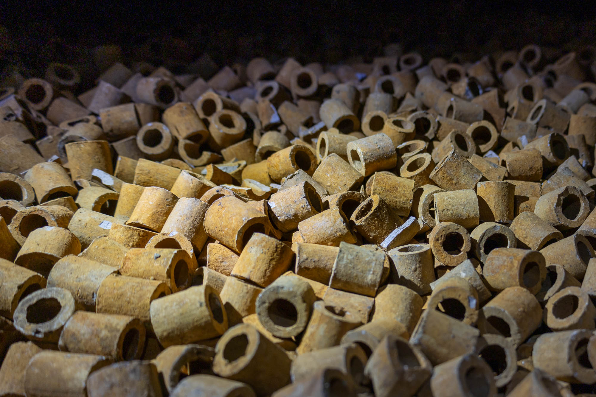
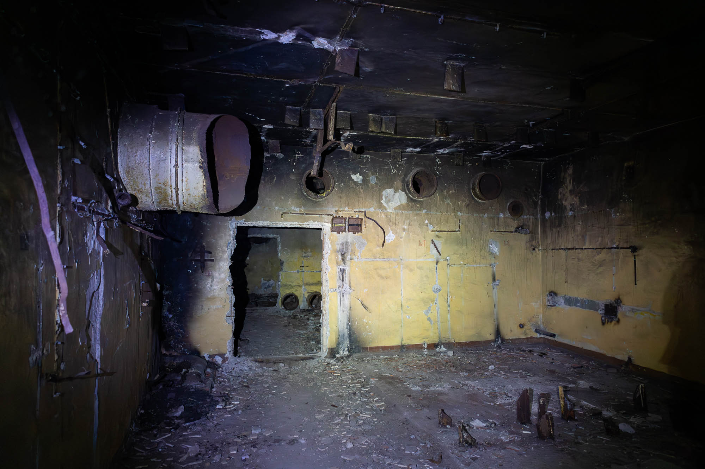
After touring more burnt-out and scrapped rooms, I eventually arrived at the next staircase which led to the third and final underground floor. Flooded with water, rubbish, and toxins for who knows how long, access to see the rest was blocked and my bunker tour came to an end.
What truly remains in this bunker beyond the rusting metal and peeling paint? What legacy does this huge investment of time and money leave behind?
It never saw active service, it never saved lives, it never repaid its debt to the paranoid union that created it.
It really is only public money buried in the ground.
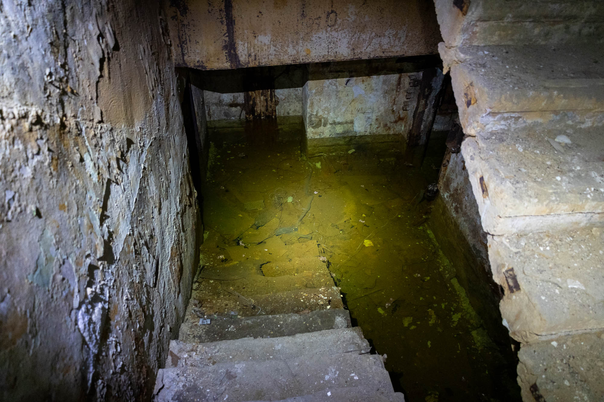